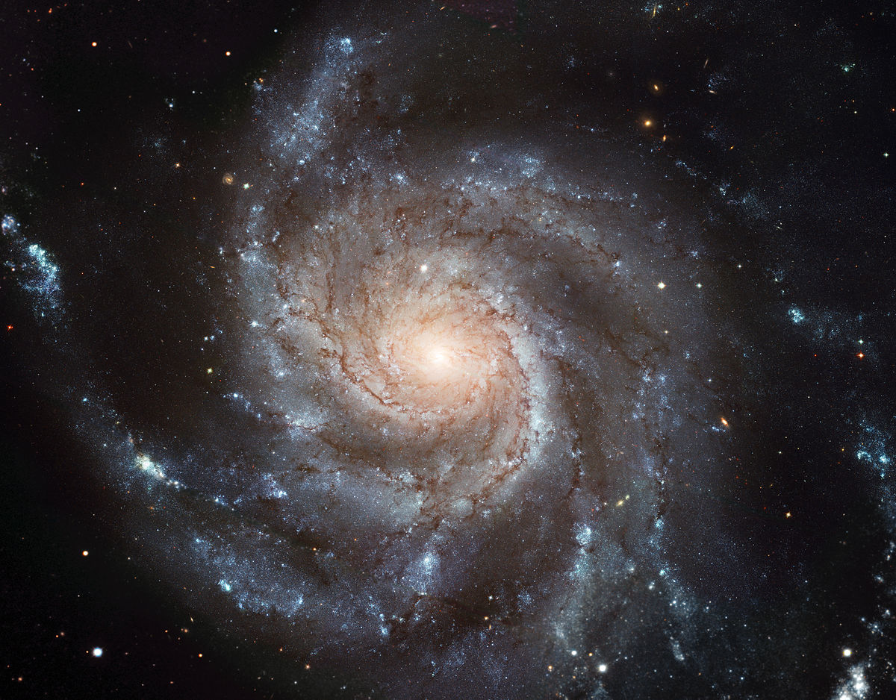

Înapoi acasă
Galaxiile sunt uriaşe aglomerări de stele cu sistemele lor planetare, gaze şi praf interstelar ținute laolaltă de forta gravitațională.
Mărimea lor poate varia de la cele pitice, care au doar 3 000 de ani-lumină în diametru și câteva sute de milioane de stele, până la cele gigantice, al căror diametru atinge 300 000 de ani-lumină şi care adăpostesc chiar şi 100 de miliarde de stele. Cele mai multe galaxii au în mijloc o gaură neagră supermasivă, care uneori poate fi de miliarde de ori mai mare decât soarele nostru.
Astronomii estimează că pe cer putem vedea sute de miliarde de galaxii. Împreună, acestea numără mai multe stele decât toate firele de nisip de pe plajele mărilor şi oceanelor de pe Pământ.
Cele mai multe galaxii au formă de spirală, cu un nucleu în centru și niște ramificații spre exterior ca brațele unui ventilator. În brațele galaxiilor în spirală, cantitatea de hidrogen este suficient de mare pentru a iniția naşterea unor stele noi. De aceea, aceste ramificații sunt mai strălucitoare decât nucleul, pentru că pe ele se găsesc stele tinere, strălucind adesea în albastru.
După miliarde de ani, multe galaxii spiralate își pierd brațele și devin galaxii eliptice, care seamănă cu o sferă turtită. Praful și gazul interstelar au fost epuizate la naşterea stelelor. Fără un nou combustibil, galaxiile eliptice nu mai formează stele noi. Cele vechi se răcesc şi strălucesc în culoarea roșie. Galaxiile eliptice sunt bătrâne şi se văd roșiatic.
De multe ori, două galaxii se ciocnesc și formează o nouă galaxie, care are un aspect dezordonat și este lipsită de brațe și de nucleu galactic. Este vorba de o galaxie neregulată. Ciocnirea perturbă gazul interstelar, provocând nașterea unor stele noi. Noua galaxie devine o creșă cosmică de stele tinere, care strălucesc puternic în albastru și violet.
Calea Lactee
Calea Lactee, galaxia unde se află sistemul nostru solar, este aproape la fel de bătrână ca universul. Deoarece o vedem dinăuntrul ei, pentru noi ea nu are formă de spirală, ci arată ca o dâră albicioasă pe cerul nopții, motiv pentru care şi-a şi căpătat numele, împrumutat din mitologia greacă.
În centrul galaxiei se află o gaură neagră supermasivă. Ea atrage miliarde de stele, astfel că centrul galaxiei arată ca o umflătură. Partea exterioară a discului galactic conține o cantitate mare de gaz interstelar. Din el se nasc stele noi, care se învârtesc în jurul centrului galaxiei. În mişcarea lor orbitală, stelele se înghesuie, așa cum se înghesuiemaşinile când traficul este aglomerat, formând brate spiralate.
Roiuri de galaxii
Toate stelele pe care le vedem pe cer sunt parte a galaxiei noastre, Calea Lactee, care este ca o insulă în univers. Pe cer, se întrezăresc şi alte insule: acestea sunt galaxii mai apropiate sau mai îndepărtate, mai mari sau mai mici.
Cele mai apropiate de noi sunt Norii lui Magellan, două galaxii pitice care se văd cu ochiul liber din emisfera sudică. Lumina lor călătoreşte până la noi aproape 200 000 de mii de ani. Galaxiile poartă numele navigatorului Magellan, care a fost încântat de frumuseţea lor atunci când a înconjurat Pământul.
Galaxia noastră, Norii lui Magellan, Andromeda şi alte încă patruzeci de galaxii formează Grupul Local de galaxii, o regiune a spațiului care se întinde pe milioane de ani-lumină. La peste 50 de milioane de ani-lumină depărtare se găseşte următorul grup de galaxii, Fecioara, care este mult mai mare decât al nostru, găzduind aproape 2 000 de galaxii. Grupul Local și Grupul Fecioara împreună cu alte o sută de grupuri formează super-grupul sau super-roiul Fecioara, o regiune cu un diametru de 100 de milioane de ani-lumină.
La scară cosmică, galaxiile formează o structură filamentară, ca o pânză de păianjen. Între filamente există goluri imense de vid cosmic, mari de sute de milioane de ani-lumină, unde nu se află aproape nicio galaxie. Acest lucru se întâmplă din pricina ingredientului special al universului, materia întunecată.